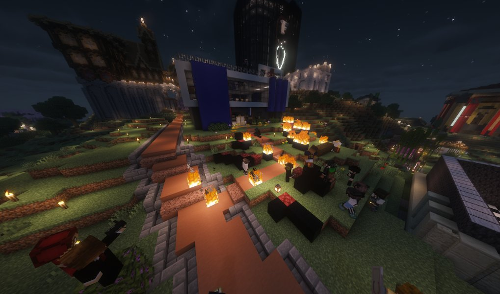
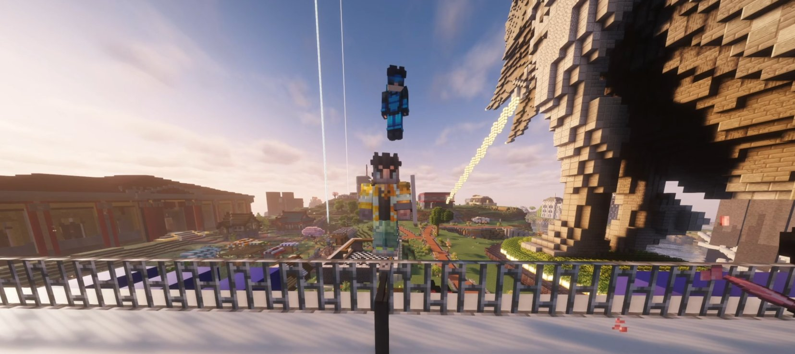
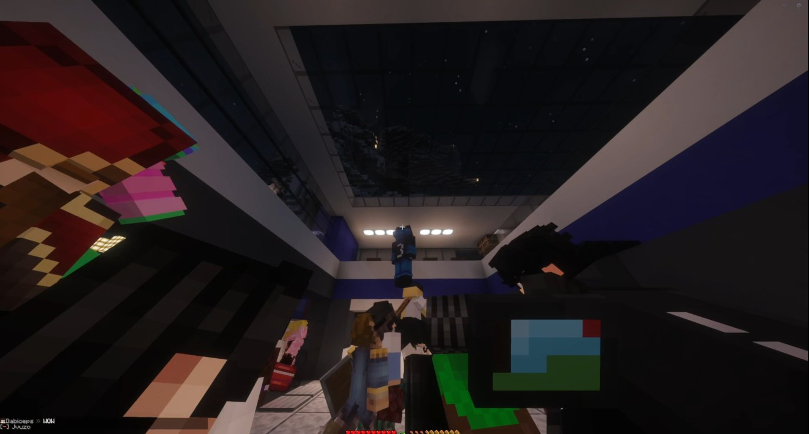
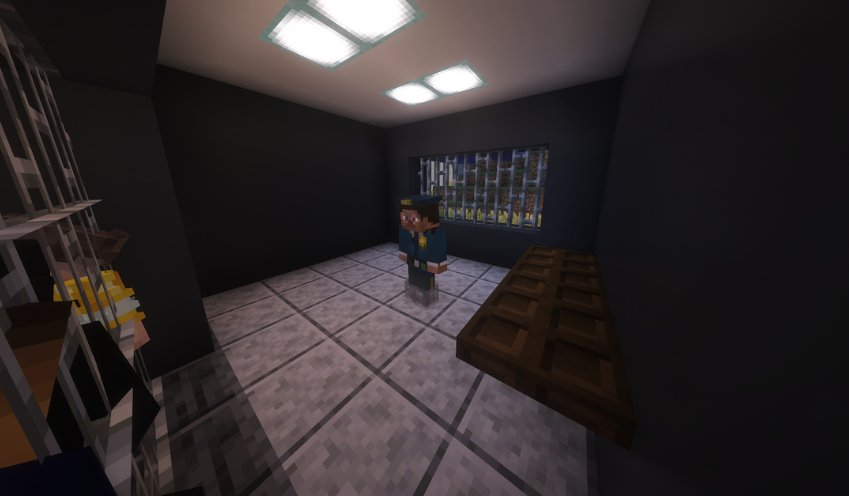

Après notre enquête sur Henri, la police fait face à une journée de colère populaire
La publication de notre enquête sur Henri a déclenché une vague de colère sans précédent. Arrestations arbitraires, feux devant le commissariat, prise de contrôle des lieux — le Karmine Déchaîné vous livre le récit de cette journée explosive.

La publication de notre enquête sur Henri a déclenché une vague de colère sans précédent. Hier, une manifestation a éclaté devant le commissariat, avec une tension qui a rapidement dégénéré en affrontements, arrestations arbitraires et prise de contrôle symbolique des lieux par des citoyens excédés.
Une étincelle, puis l'embrasement
Tout commence lorsque Fabrice est tasé puis arrêté après avoir lancé : "tout le monde déteste la police". Dans la foulée, Vénus est elle aussi arrêtée, sans raison apparente, ce qui ne fait qu'attiser la colère de la foule. La manifestation prend alors une autre dimension : les citoyens ne veulent plus seulement protester, ils veulent libérer les leurs.
SuperGoy prend les airs
Dans un geste spectaculaire, SuperGoy tente de s'envoler pour libérer Fabrice. Il est à son tour arrêté, ce qui provoque un nouveau sursaut de révolte. La population se mobilise alors pour exiger la libération de SuperGoy, Vénus et de l'Enderman, tous considérés comme victimes d'une répression injustifiée.

La banque coupe les vivres
Au même moment, Zackk et Sohalia annoncent que les comptes bancaires de la police sont gelés, jusqu'à preuve de l'innocence de l'institution. Un coup de tonnerre économique qui a renforcé le sentiment que la crise dépassait désormais le simple cadre du commissariat. La police se retrouvait ainsi isolée, attaquée sur le plan symbolique, politique et financier.
Le commissariat assiégé
La rue s'embrase littéralement : pneus et palettes brûlent devant le commissariat. Puis SuperGoy refait surface — il s'envole à nouveau, s'infiltre à l'étage et ouvre la porte aux citoyens en colère. Le commissariat est capturé, et tous les manifestants se retrouvent sur le toit.

Le discours de David Martinez
Depuis le toit du commissariat, David Martinez le révolutionnaire prend la parole devant la foule :
"La révolution commence, mes frères, mes sœurs, on va pas s'arrêter là, rejoignez-nous comme vous le pouvez, faites vos actions de votre côté, foutez le bazar en ville. Vive la révolution !"
— David Martinez, depuis le toit du commissariat
Libérations et revirements
Dans la confusion, l'Enderman est libéré, tandis que le brigadier SSIAP est placé en cellule. Mais l'épisode tourne presque à la farce : le brigadier SSIAP est libéré par son collègue seulement cinq minutes plus tard. Une scène qui illustre à elle seule le chaos total de la journée.

L'interview de Mbappé
À la sortie de la manifestation, Mbappé a jugé la journée "super", affirmant que tout le monde s'est régalé. Selon lui, les policiers n'étaient pas au niveau cette fois-ci. Il a validé le schéma 4-4-2, estimant que l'attaque avec SuperGoy en numéro 10 avait parfaitement fonctionné. Sur la question du Ballon d'or, il a rappelé qu'il espère que SuperGoy y parvienne, mais que le vrai test restera le mondial.
"Hier, les citoyens ne se sont pas contentés de protester. Ils ont pris position. Et le pouvoir, lui, a vacillé."
— La Rédaction